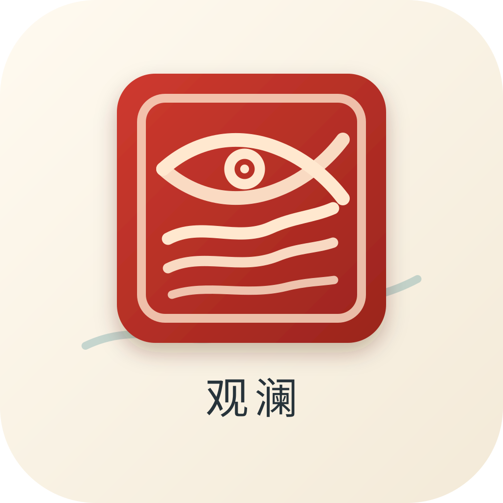

先判断去哪找
把问题路由到官方、垂直、社区、财经、学术、娱乐、开发者或热榜信源。

观澜 GuanlanThe Thesis
中文互联网不是一个平面网页库。它由官方口径、垂直媒体、平台社区、热榜流、动态页面和大量营销内容共同构成。观澜把这些材料先变成结构，再交给 Agent 使用。
Research Layer
把问题路由到官方、垂直、社区、财经、学术、娱乐、开发者或热榜信源。
保留来源身份、平台语境、证据角色、时间线和风险提示，让链接不再只是链接。
把研究过程留在 archive、Wiki、RAG 或 Agent 上下文里，下一次可以继续工作。
Before / After
不知道该信谁，不知道页面正文质量，也很难把一次搜索变成下一次可复用的研究上下文。
知道去哪找、谁在说、证据边界在哪，以及这些材料应该如何进入 archive / Wiki / RAG。
Install
uv tool install --force --upgrade --refresh --default-index https://pypi.org/simple guanlanguanlan mcp config --client codexguanlan research "中文问题" --advisor